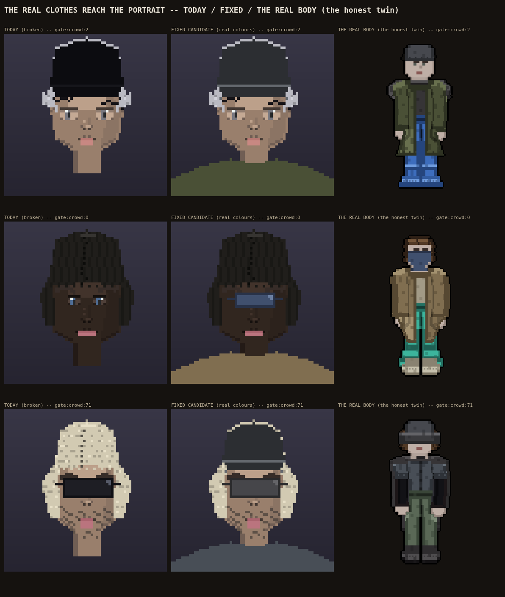

Paolo, direct, 10/10: "all of the top clothing pieces and headwear and eyewear would be impacted by the portrait."
MEASURED FIRST: headwear and eyewear shipped twice (rule 37i, 9/27 and 9/22) but read the wrong, independent, legacy system. Of 200 citizens: the real body wears a hat 58 times (from a real catalogue of 21 styles); the portrait's old source claims a hat 68 times (from a catalogue of exactly ONE style, 'hat/durag'). They only agree on presence/absence 118 of 200 times (59%) -- barely above a coin flip, and even a "both have a hat" case is usually two different hats. Same shape for face accessories (shades/masks/bandanas): body 20, old source 58, agree 136 of 200. This is the sixth time this exact bug shape has hit this lane (cut SHAPE 8/28, hair COLOUR 9/20, the braid sentinel 9/24, the face-maker's dropped dials 10/9, the whole crowd's random texture 10/9, now this).
TOP CLOTHING, MEASURED AS NEVER BUILT AT ALL: the portrait's shoulder colour has always been a rolled random RGB, never read from any real garment (rule 37i, 9/27: "shoulders only if the clothing assets make it cheap; say the cost"). It is cheap now.
NO PORTRAIT REFERENCE TWIN EXISTS IN THE REPO (checked reference/art_bank/portrait/ and reference/library/face/, both hold only a README/INDEX, no real image) -- named OWED again, not faked.

CANDIDATE ONLY, RULE 100 (COOK ONLY UNTIL HIS FINAL): nothing here touches slices/, engine/ or the demo. The hat and face-accessory SILHOUETTE reused above is a placeholder (the existing durag/shades shape everyone already has) -- new hat/accessory SHAPES are COOK THREE's/CHARACTER's paint layer, not reinvented here. Every colour shown is read straight off the real garment the body already wears, from window.GARMENTS' own authored data, never invented.